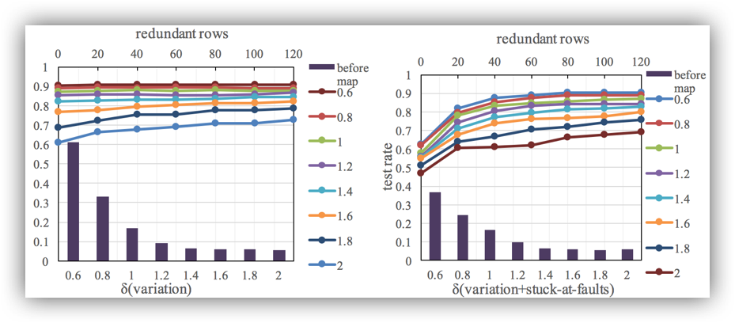

Researches2:
Neural-network Retraining for Fault Tolerance, 2016
Leverage the inherent sparse weight-matrix and self-tuning capability of the neural network to avoid assigning the large value weight to the memristor with defects and high variance. We explore the self-healing of the neural-network to enlarge the solution space of finding the fault tolerable weight-memristor mappings. To train the neural-network, in this paper, we apply the conven- tional back-propagation method that utilizes the gradient descent technique. To show our retraining process with fixed weight, we use a simple two-layer fully connect neural-network as an example.

L. Chen, J. Li, J. Shen and L. Jiang, "Learning Variations and Defects: a Neural-network Retraining Method for Fault Tolerance in the RRAM Crossbar" Design, Automation and Test in Europe (DATE), 2017 [pdf] [demo]
• Designed redundancy combined with ”Kuhn-Munkres” mapping method applied to the model of variation on memristors given by Vortex(DAC15) where features include normal distribution, random presence and weight-error relations instead of hardware-style RRAM Crossbar computings
• Implemented Redundancy-Mapping on the standard 784 × 10 Mnist Data Set (20−30% advanced)
• Analyzed the relationship of topology and mapping and improvements of Redundancy-Mapping